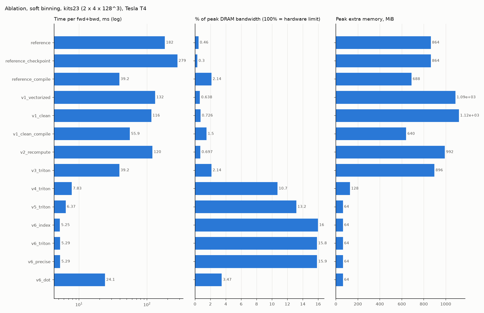
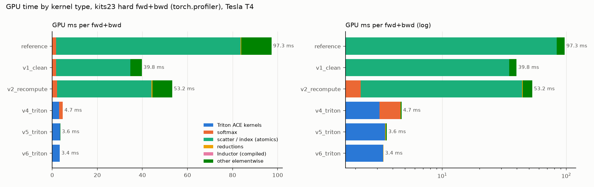

Sprints: S5-S8
4. Triton kernels: privatized histograms, fused backward, fused softmax
Sprints 5-8 replace the PyTorch internals with GPU kernels written in Triton: Python-syntax kernels compiled to GPU code, where you program a block of data at a time instead of single threads.
Concept: the Triton programming model in 6 lines
- A kernel runs as many independent programs (a grid).
tl.program_id(axis)tells a program which piece of the data it owns. - Each program works on whole blocks:
offs = pid * BLOCK + tl.arange(0, BLOCK)is a vector of BLOCK indices, andtl.load(ptr + offs, mask=offs < N)loads them. - Values live in registers;
tl.sum(x, axis=0)reduces a block inside the program. tl.constexprarguments are compile-time constants:if ACT == 1:is resolved when compiling, so one source gives specialized kernels without runtime branches.@triton.autotunetries several BLOCK sizes / warp counts on first call and keeps the fastest per input-size key.tl.atomic_addis the only way programs combine results in global memory.
Our grid: axis 0 = blocks of voxels, axis 1 = batch element. (It was the other way round first; CUDA limits grid axis 1 to 65535 programs, which a 256^3 volume exceeds. The fix and a regression test are in Sprint 6.)
The forward kernel: a private histogram per program
Each program loads BLOCK voxels, computes their bin, builds the one-hot matrix
[BLOCK, K] in registers, sums it over voxels (tl.sum) into a private K-bin
histogram, and publishes it with one atomic add per bin and statistic. Collisions
drop from millions to a few thousand:
52@triton.autotune(
53 configs=_CONFIGS,
54 key=["N", "C", "K", "DOT"],
55 reset_to_zero=["out_ptr"],
56 prune_configs_by={"early_config_prune": prune_dot_configs},
57)
58@triton.jit
59def _hard_hist_kernel(
60 x_ptr, # [B, C, N] probabilities (ACT none) or logits, any float dtype
61 labels_ptr, # [B, N] int64 class per voxel, indexing x's channels; -1: none
62 onehot_ptr, # [B, C, N] float targets aligned with x; if not USE_LABELS
63 edges_ptr, # [K] float32 upper bin edges (reference linspace)
64 out_ptr, # [3, B, C - OFFSET, K] float32, zeroed: count, sum p, sum y
65 N,
66 C, # channels of x
67 BCK, # B * (C - OFFSET) * K: stride between the three statistics
68 K: tl.constexpr,
69 KP: tl.constexpr, # next power of two >= K (tl.arange needs a power of 2)
70 CP: tl.constexpr, # next power of two >= C (softmax tile)
71 OFFSET: tl.constexpr, # 1: channel 0 (background) is not in the loss
72 ACT: tl.constexpr, # activation applied in-kernel (act.py)
73 RIGHT: tl.constexpr,
74 USE_LABELS: tl.constexpr,
75 DIRECT: tl.constexpr, # O(1) bin index (bins.sorted_count)
76 DOT: tl.constexpr, # tensor-core reduction (bins.put3 / join3)
77 PRECISE: tl.constexpr, # libdevice exp in the activation
78 BLOCK: tl.constexpr,
79):
80 # voxel blocks on grid axis 0 (up to 2^31 - 1 programs); axis 1 is limited to
81 # 65535, which 256^3 volumes exceed (measured: "invalid argument" on a T4)
82 b = tl.program_id(1)
83 offs = tl.program_id(0) * BLOCK + tl.arange(0, BLOCK)
84 valid = offs < N
85 bins = tl.arange(0, KP)
86 bin_ok = bins < K
87 if USE_LABELS:
88 label = tl.load(labels_ptr + b * N + offs, mask=valid, other=-1)
89 m = tl.zeros([BLOCK], dtype=tl.float32)
90 s = tl.full([BLOCK], 1.0, dtype=tl.float32)
91 if ACT == 1:
92 m, s = softmax_stats(x_ptr, b, offs, valid, N, C, CP, PRECISE)
93 for c in range(OFFSET, C):
94 base = (b * C + c) * N
95 x = tl.load(x_ptr + base + offs, mask=valid, other=0.0).to(tl.float32)
96 p = tl.where(valid, activate_tl(x, m, s, ACT, PRECISE), 0.0)
97 if DIRECT:
98 idx = sorted_count(p, edges_ptr, K, RIGHT)
99 else:
100 idx = tl.zeros([BLOCK], dtype=tl.int32)
101 for k in tl.static_range(K):
102 edge = tl.load(edges_ptr + k)
103 if RIGHT:
104 idx += (p >= edge).to(tl.int32)
105 else:
106 idx += (p > edge).to(tl.int32)
107 if USE_LABELS:
108 y = ((label == c) & valid).to(tl.float32)
109 else:
110 y = tl.load(onehot_ptr + base + offs, mask=valid, other=0.0).to(tl.float32)
111 if DOT:
112 col = tl.arange(0, DOT_COLS)[None, :]
113 vals = tl.where(col == 0, 1.0, tl.where(col == 1, y[:, None], 0.0))
114 vals = put3(vals, col, 2, p)
115 onehot_t = (bins[:, None] == idx[None, :]) & valid[None, :]
116 acc = tl.dot(onehot_t.to(tl.float16), vals.to(tl.float16)) # [KP, 16]
117 count = column(acc, col, 0)
118 sum_y = column(acc, col, 1)
119 sum_p = join3(acc, col, 2)
120 else:
121 hit = ((idx[:, None] == bins[None, :]) & valid[:, None]).to(tl.float32)
122 count = tl.sum(hit, axis=0)
123 sum_p = tl.sum(hit * p[:, None], axis=0)
124 sum_y = tl.sum(hit * y[:, None], axis=0)
125 out = out_ptr + (b * (C - OFFSET) + c - OFFSET) * K + bins
126 tl.atomic_add(out, count, mask=bin_ok)
127 tl.atomic_add(out + BCK, sum_p, mask=bin_ok)
128 tl.atomic_add(out + 2 * BCK, sum_y, mask=bin_ok)
Read top to bottom: block offsets and labels; optional fused softmax (softmax_stats, page 5 of the ladder); per channel: activation, bin index (DIRECT: O(1), Sprint 11; else K compares), target y, reduction (DOT: tensor-core variant; else the one-hot sums), three atomic_adds.
Exactness. The bin of a probability must match the reference bit-for-bit, or the
loss would differ for voxels on edges. The kernel compares against the reference's own
float32 edge tensor (torch.linspace(0, 1 + eps32, K + 1)) with the same comparison as
torch.bucketize (right=False: count of edges < p). Edge-exact inputs are golden
cases (bin-edges-left/right), and test_hard_stats_match_torch requires exactly
equal bin counts.
Worked example: the private-histogram reduction on the CPU
The same arithmetic as one Triton program, written with torch on the CPU, against the reference's scatter:
import torch
torch.manual_seed(0)
K, BLOCK, N = 20, 256, 4096
p = torch.rand(N)
y = (torch.rand(N) < p).float()
edges = torch.linspace(0, 1 + torch.finfo(torch.float32).eps, K + 1)[1:]
idx = torch.bucketize(p, edges)
# reference style: every voxel adds into one of K addresses (atomics on a GPU)
counts_ref = torch.zeros(K).scatter_add(0, idx, torch.ones(N))
sum_p_ref = torch.zeros(K).scatter_add(0, idx, p)
# kernel style: per block, one-hot [BLOCK, K] -> private histogram -> one add per bin
counts, sum_p, atomics = torch.zeros(K), torch.zeros(K), 0
for start in range(0, N, BLOCK):
b_idx, b_p = idx[start:start + BLOCK], p[start:start + BLOCK]
hit = (b_idx[:, None] == torch.arange(K)[None, :]).float() # [BLOCK, K] in registers
counts += hit.sum(0) # tl.sum(hit, axis=0)
sum_p += (hit * b_p[:, None]).sum(0)
atomics += 2 * K # one atomic per bin
print("counts identical:", torch.equal(counts, counts_ref))
print("sum p rel. diff :", ((sum_p - sum_p_ref).abs() / sum_p_ref).max().item(), "(fp32 summation order)")
print(f"atomic adds : reference {2 * N}, kernel {atomics} ({2 * N // atomics}x fewer)")
counts identical: True sum p rel. diff : 4.916239504382247e-07 (fp32 summation order) atomic adds : reference 8192, kernel 640 (12x fewer)
The backward kernel: one pass, nothing stored
The backward (Sprint 6) reads each voxel's logits once, recomputes probability and
bin, gathers coef[bin] from the tiny per-bin table (page 3), applies the softmax
backward across channels in registers, and writes the gradient once:
31@triton.autotune(configs=_CONFIGS, key=["N", "C", "K"])
32@triton.jit
33def _hard_bwd_kernel(
34 x_ptr, # [B, C, N] probabilities, or logits if FROM_LOGITS (any float dtype)
35 coef_ptr, # [B, C - OFFSET, K] float32: sign(d) / (K_ne W), 0 for empty bins
36 g_ptr, # [B, C - OFFSET] float32: dL/df_bc
37 edges_ptr, # [K] float32
38 dx_ptr, # [B, C, N] float32 output: dL/d(logits)
39 N,
40 C,
41 OFFSET: tl.constexpr, # 1 when the background channel is excluded from the loss
42 K: tl.constexpr,
43 CP: tl.constexpr, # next power of two >= C
44 RIGHT: tl.constexpr,
45 ACT: tl.constexpr,
46 FROM_LOGITS: tl.constexpr, # recompute the activation in-kernel (fused)
47 DIRECT: tl.constexpr, # O(1) bin index, as the forward (bins.sorted_count)
48 PRECISE: tl.constexpr, # libdevice exp, as the forward
49 BLOCK: tl.constexpr,
50):
51 # voxel blocks on grid axis 0 (up to 2^31 - 1 programs); axis 1 is limited to
52 # 65535, which 256^3 volumes exceed (measured: "invalid argument" on a T4)
53 b = tl.program_id(1)
54 offs = tl.program_id(0) * BLOCK + tl.arange(0, BLOCK)
55 valid = offs < N
56 chan = tl.arange(0, CP)
57 chan_ok = chan < C
58 mask = chan_ok[:, None] & valid[None, :]
59 ptrs = b * C * N + chan[:, None] * N + offs[None, :]
60 if FROM_LOGITS: # same functions as the forward kernels -> same bins
61 m, s = softmax_stats(x_ptr, b, offs, valid, N, C, CP, PRECISE)
62 x = tl.load(x_ptr + ptrs, mask=mask, other=0.0).to(tl.float32)
63 p = tl.where(mask, activate_tl(x, m[None, :], s[None, :], ACT, PRECISE), 0.0)
64 else:
65 p = tl.load(x_ptr + ptrs, mask=mask, other=0.0).to(tl.float32) # [CP, BLOCK]
66
67 if DIRECT:
68 idx = sorted_count(p, edges_ptr, K, RIGHT)
69 else:
70 idx = tl.zeros([CP, BLOCK], dtype=tl.int32)
71 for k in tl.static_range(K):
72 edge = tl.load(edges_ptr + k)
73 if RIGHT:
74 idx += (p >= edge).to(tl.int32)
75 else:
76 idx += (p > edge).to(tl.int32)
77
78 c_loss = C - OFFSET # channels that enter the loss
79 row = chan - OFFSET
80 in_loss = (row >= 0) & chan_ok
81 coef = tl.load(
82 coef_ptr + (b * c_loss + row)[:, None] * K + idx,
83 mask=in_loss[:, None] & valid[None, :],
84 other=0.0,
85 )
86 g = tl.load(g_ptr + b * c_loss + row, mask=in_loss, other=0.0)
87 gp = coef * g[:, None] # dL/dp, 0 for the dropped background channel
88
89 if ACT == 1: # softmax over channels
90 dx = p * (gp - tl.sum(p * gp, axis=0)[None, :])
91 elif ACT == 2: # sigmoid
92 dx = gp * p * (1.0 - p)
93 else:
94 dx = gp
95 tl.store(dx_ptr + ptrs, dx.to(dx_ptr.dtype.element_ty), mask=mask)
The tile is [channels, BLOCK]: all channels of a voxel in one program, because the softmax backward couples channels: dx_c = p_c (g_c - sum_c' p_c' g_c').
Fusing the softmax (Sprint 8)
v4 still called torch.softmax before both kernels: one extra read + write of a
probability tensor in the forward and again in the backward (31% of v4's time). v5
computes the softmax inside both kernels from the logits:
38@triton.jit
39def softmax_stats(x_ptr, b, offs, valid, N, C, CP: tl.constexpr, PRECISE: tl.constexpr):
40 """Per-voxel max and sum of exp over the C channels of a block: [BLOCK] each."""
41 chan = tl.arange(0, CP)
42 mask = (chan < C)[:, None] & valid[None, :]
43 x = tl.load(
44 x_ptr + (b * C + chan)[:, None] * N + offs[None, :],
45 mask=mask,
46 other=float("-inf"),
47 ).to(tl.float32)
48 m = tl.where(valid, tl.max(x, axis=0), 0.0)
49 s = tl.sum(exp_tl(x - m[None, :], PRECISE), axis=0) # masked rows: exp(-inf) = 0
50 return m, tl.where(valid, s, 1.0)
Per voxel: max over channels and the sum of exp (numerically stable softmax), on a [CP, BLOCK] tile.
53@triton.jit
54def activate_tl(x, m, s, ACT: tl.constexpr, PRECISE: tl.constexpr):
55 """Probability from logits ``x`` (``m``, ``s`` from ``softmax_stats``)."""
56 if ACT == 1:
57 p = tl.div_rn(exp_tl(x - m, PRECISE), s)
58 elif ACT == 2:
59 p = tl.div_rn(1.0, 1.0 + exp_tl(-x, PRECISE))
60 else:
61 p = x
62 return p
Probability of one channel from its logit and the voxel's (max, sum). Forward and backward call the same function, so a voxel lands in the same bin in both passes.
Side effect: logits in fp16/bf16 are read directly (half the bytes), all math in fp32. And no probability tensor exists at all: peak memory halves again.
Soft binning
Soft binning assigns each probability to its two neighbouring bin centres with linear weights. Bit-exactness again comes from using the reference's own tables, including its +-10000 sentinels at the ends:
54@triton.jit
55def soft_assign_tl(
56 p,
57 half_ptr,
58 repl_ptr,
59 K: tl.constexpr,
60 RIGHT: tl.constexpr,
61 DIRECT: tl.constexpr,
62):
63 """Left/right bins, weights and span S for probabilities ``p`` (any shape)."""
64 if DIRECT: # half boundaries half[1:], 2K values, entry j ~= (j + 1) / 2K
65 h = sorted_count(p, half_ptr + 1, 2 * K, RIGHT)
66 else:
67 h = tl.zeros(p.shape, dtype=tl.int32)
68 for j in tl.static_range(2 * K):
69 bound = tl.load(half_ptr + 1 + j)
70 if RIGHT:
71 h += (p >= bound).to(tl.int32)
72 else:
73 h += (p > bound).to(tl.int32)
74 left = tl.maximum(h - 1, 0) // 2
75 right = tl.minimum(h + 1, 2 * K - 1) // 2
76 left_dist = p - tl.load(repl_ptr + h)
77 right_dist = tl.load(repl_ptr + h + 2) - p
78 span = left_dist + right_dist
79 lw = tl.div_rn(right_dist, span)
80 rw = tl.div_rn(left_dist, span)
81 return left, right, lw, rw, span
Half-bin index h (count of half boundaries below p), left/right bins, distances to the replicated centre table, IEEE division (tl.div_rn) like PyTorch's /.
Evidence

Proves: v3 (Triton forward) removes the atomic bottleneck; v4 (Triton backward) the PyTorch backward; v5 the softmax passes; soft gains are larger than hard (the reference's soft path is 11x memory and 981 kernels).

Proves: v4: the Triton kernels plus a visible softmax share; v5/v6: only the Triton kernels remain.
| shape | impl | status | ms | peak MiB |
|---|---|---|---|---|
| amos-b4 | reference | ok | 4061.5 | 6604.0 |
| amos-b4 | v2_recompute | ok | 1130.0 | 6776.0 |
| amos-b4 | v4_triton | ok | 63.4 | 968.0 |
| cube128 | reference | ok | 182.4 | 864.0 |
| cube128 | v2_recompute | ok | 118.8 | 992.0 |
| cube128 | v4_triton | ok | 6.8 | 128.0 |
| cube192 | reference | ok | 594.1 | 2926.0 |
| cube192 | v2_recompute | ok | 384.5 | 3348.0 |
| cube192 | v4_triton | ok | 25.6 | 432.0 |
| cube256 | reference | ok | 1407.3 | 6912.0 |
| cube256 | v2_recompute | ok | 900.2 | 7936.0 |
| cube256 | v4_triton | ok | 63.5 | 1024.0 |
| cube288 | reference | oom | ||
| cube288 | v2_recompute | ok | 1284.1 | 11302.0 |
| cube288 | v4_triton | ok | 92.9 | 1460.0 |
Seeing it yourself: profiler traces. Each profile folder contains trace.json.
Open ui.perfetto.dev, drag the file in, and look at the GPU
stream row: for v5 you see two long kernels per step (histogram, backward) and almost
nothing else; for the reference, hundreds of short kernels.
$ open results/kaggle/1ab2f019d85e-run-sprint8/results/profile/v5_triton-hard-kits23-fwd_bwdthe folder with trace.json (Perfetto), summary tables, saved-tensor list
Try it
Triton has no macOS build, so the kernel tests run on the Kaggle GPU. Read their
intent in tests/test_triton.py; to run them remotely (page 7):
$ uv run python -m ace_bench.remote submit kaggle/run_triton_dev.shTriton tests on a Kaggle T4 (~15-30 min); then: uv run python -m ace_bench.remote fetch kaggle/run_triton_dev.sh